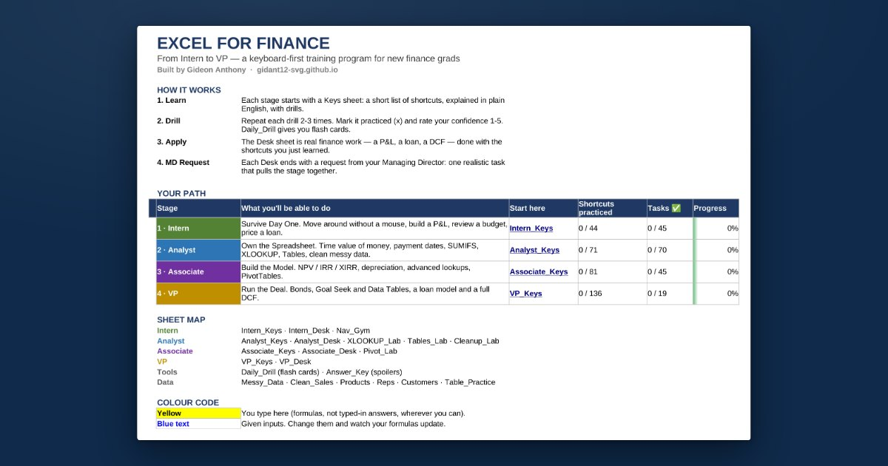

Desk · Practice workbook
Excel for Finance: Intern to VP
A keyboard-first Excel program for new finance grads. Learn the shortcuts, drill them, then use them on real finance work that checks your answers as you go.

How it works
Every stage follows the same four steps.
Each stage starts with a Keys sheet: a short list of shortcuts, explained in plain English, with drills.
Repeat each drill two or three times, mark it practised and rate your confidence. Daily_Drill gives you flash cards.
The Desk sheet is real finance work (a P&L, a loan, a DCF) done with the shortcuts you just learned.
Each Desk ends with a request from your Managing Director: one realistic task that pulls the stage together.
The four stages
Yellow cells are where you type a formula. A check cell next to each one tells you if you're right, wrong, or right with the wrong sign.
Survive Day One
Move around without a mouse, build a P&L, review a budget against actuals, and price your first loan.
Own the Spreadsheet
Time value of money, payment dates, conditional sums, XLOOKUP, Tables, and cleaning a messy data export.
Build the Model
Is a project worth doing? NPV, IRR and XIRR, depreciation schedules, advanced lookups and PivotTables.
Run the Deal
Bond pricing, Goal Seek and Data Tables, a 15-year loan amortization model, and a full five-year DCF.
What an MD request looks like
The end of Stage 1:
Good to know
Built for Excel 2021, 2024 and Microsoft 365 on Windows. XLOOKUP needs Excel 2021 or newer.
On a Mac, Ctrl is usually Cmd and the F-keys may need Fn. Ribbon shortcuts (Alt → …) are Windows-only.
The Answer_Key sheet has every solution, if you get stuck. Try first, peek later.
All companies, people and figures in the workbook are fictional.